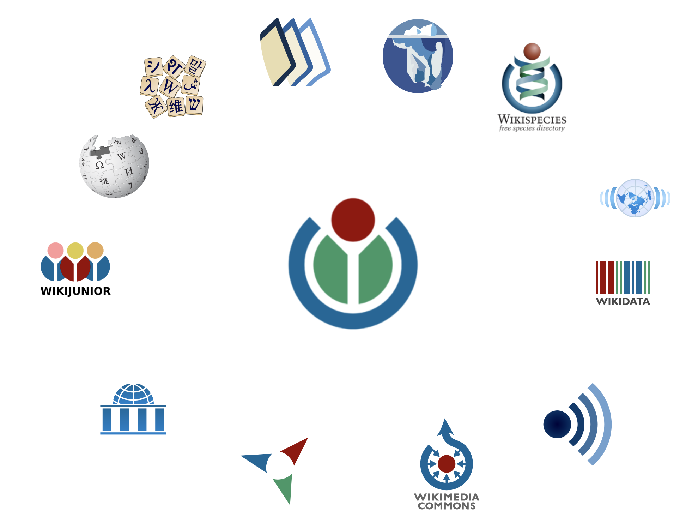
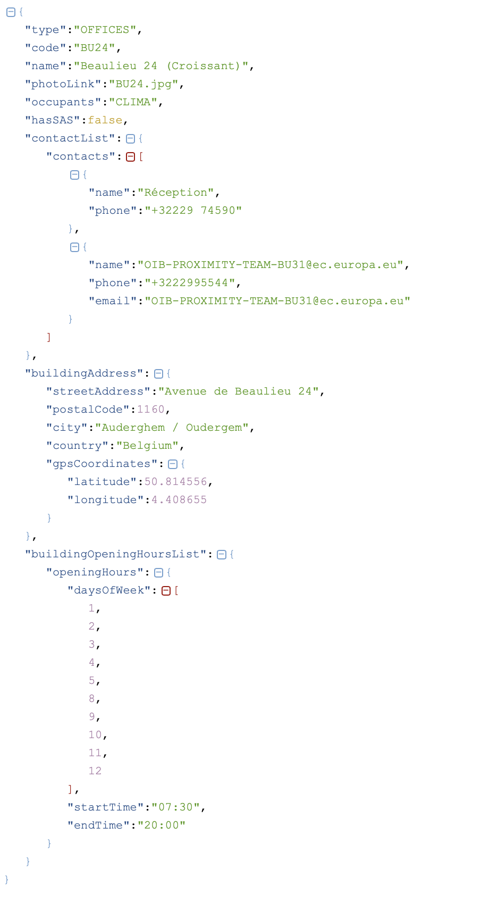

The EU Knowledge Graph
Dennis Diefenbach (The QA Company)
Max De Wilde (DG CNECT, European Commission)
Anne Thollard (DG REGIO, European Commission)
@Semantics 2021 (hybrid)
07.09.2021
Wikimedia hosts many wikis ....

Wikibase is the software behind Wikidata
A data repository to store structured data about the European Union
Can be edited by humans and by bots
Wikibase hosts Wikidata, one of the largest existing KGs containing 5 Billion triples.
942.289 projects financed by the European Union
257.784 beneficiaries of EU funds
1. Take any structured data

2. Model the data
- Need entities like building, office
- Need properties like address, open hour, occupant
- Whenever possible take wikidata entities/properties or existing entities/properties
3. Keep identifiers
Use other identifiers so that one can use them to link to other resources!
4. Import using Wikibase APIs
We always used Pywikibot ....
But there are alternatives ....
The imported data is easy to understand, aligned with existing concepts, queriable and easy to reuse ....
1. Entities imported from Wikidata
WikidataUpdater
A bot that checks that the data is in sync.
Checks every 5 min!
3. Question Answering
We allow to query and explore the KG using natural language
Can be integrated in chatbots
Kohesio:
Transparency on programmes and projects co-funded by the EU
EU Cohesion Policy
- EU Cohesion Policy supports every year tens of thousands of projects across Europe
- EU Cohesion Policy makes up approximately 32.5 % of the EU budget 2014-2020 (equivalent to ca. EUR 351.8 billion)
What is Kohesio?
- The money is managed together with national or local authorities in the 27 EU member states.
- The EU member states have legal obligation to publish the list of EU co-funded projects and their related beneficiaries.
- The objective of Kohesio is to aggregate this data and make it publically and easily available in open format.
Data
- Dozens of files in CSV, XLSX or XLS describing the projects of EU member states
- Around 15 files describing vocabulary specific to Cohesion Policy: categories of intervention, thematic objectives, ...
- Data about geographic entities (NUTS)
- Wikidata
Enriching the data
- Translating project labels and descriptions into English
- Computing geographic coordinates based on postal code (geocoding)
- Deducing in which NUTS region the project is located
- Linking NUTS regions and beneficiaries with Wikidata
Build a website for citizens on top
To summarize
- We integrated structured data from different sources into one uniform model
- The data is enriched in various ways, thereby increasing its value
- The data is openly accessible by citizens, showing the impact of EU funds in their region
Conclusion
We have shown:
- how Wikibase is used as the underlying infrastructure for the EU Knowledge Graph
- the contents of the EU KG, how the data is ingested, maintained fresh and which services are offered
- a concrete use case: Kohesio
Acknowledgements:
- DORIS Team @ DG CNECT
- Knowledge Management Team @ DG REGIO
- Wikimedia Deutschland (WMDE)